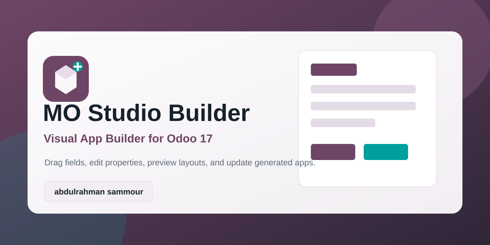
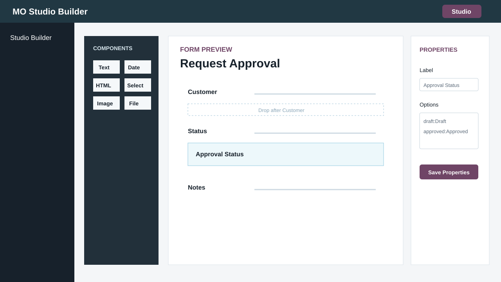
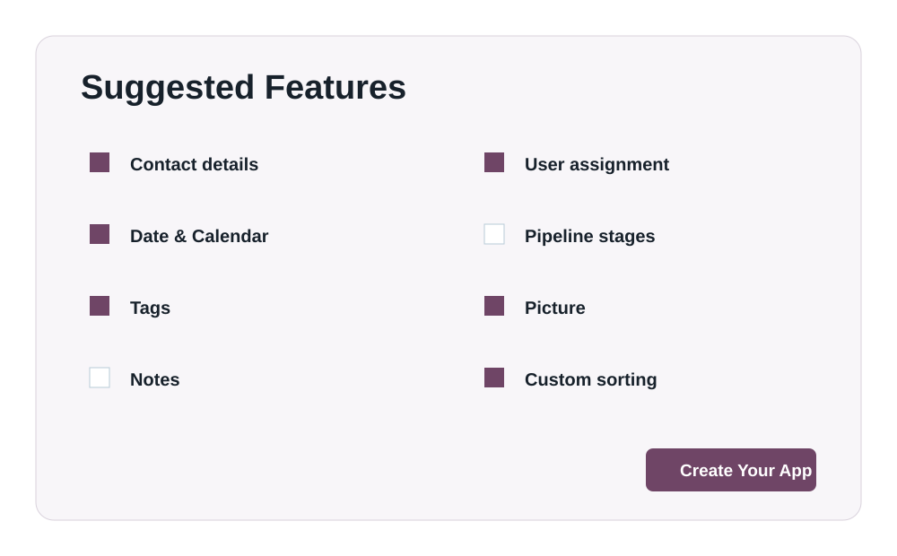
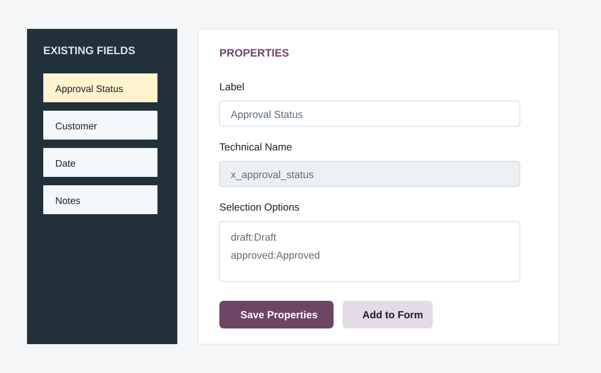

Create custom Odoo applications, add fields, edit page layouts, configure properties, and update generated views from a visual editor.
Created by abdulrahman sammour
Open the builder from the Odoo top bar while working inside supported pages.
Preview fields and layout changes before applying them to the real Odoo view.
Edit labels, help text, readonly, required, relations, and selection options.


